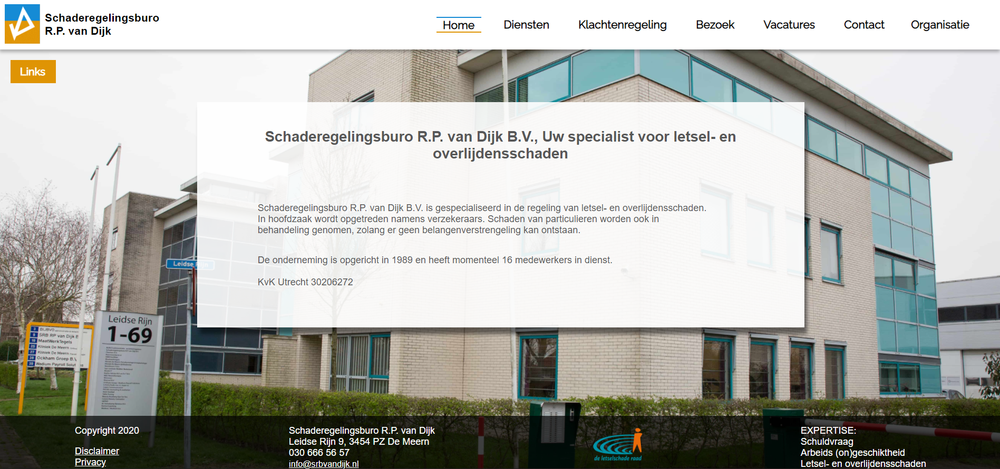
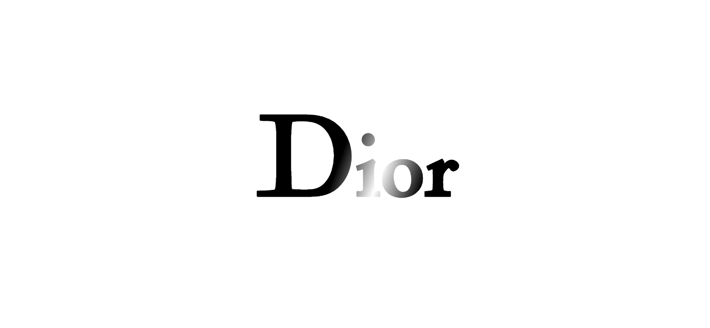
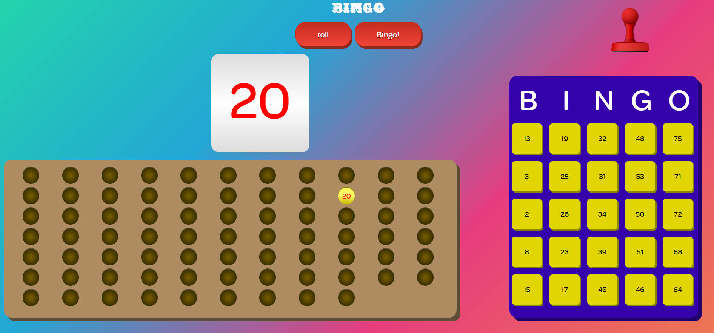
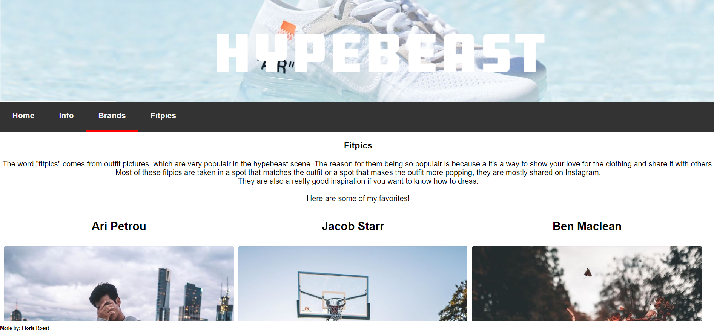
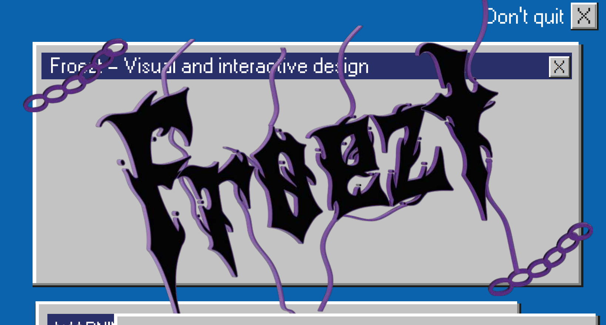
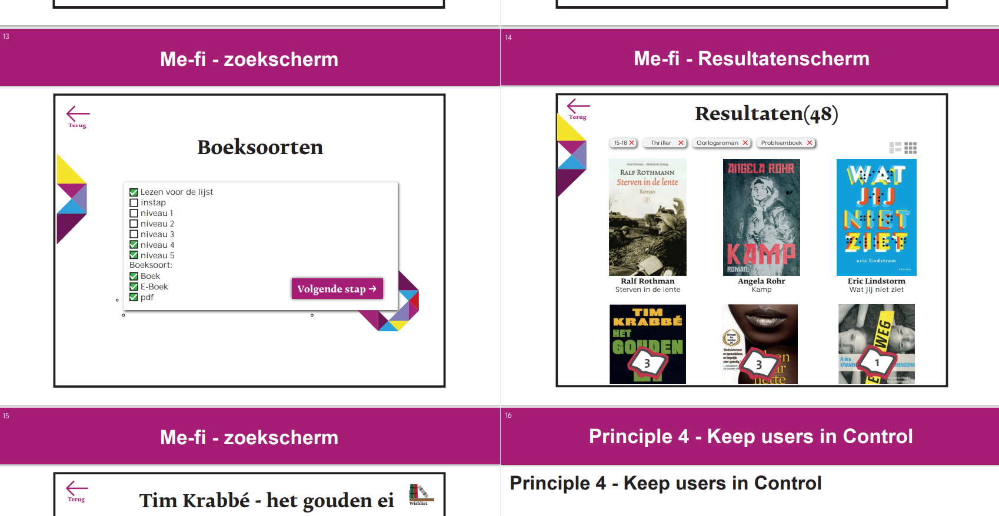

Hey! My name is Floris Roest and I am a multimedia designer! I am 21 years old and have been studying Communication and multimedia design at the Amsterdam University of Applied Sciences for two years.
In my free time I like being creative with clothing, I love making "different" outfits and stand out that way! My friends are also very important to me and love hanging out with them.

Blackjack
In my first year of studying at the Amsterdam University of Applied siences I got the assignment to create a game using javascript. I always liked blackjack and thought it should be doable considering I already had a little bit of coding experience from studying ICT at the Utrecht University of Applied siences. This assignment is focussed solely on the coding and not on design, that's why there is barely any design added.
If you would like to try it out, you can do so by clicking HERE.
Website Schaderegelingsburo van Dijk
My mom works for Schaderegelingsburo van Dijk when she was complaining about their website, she thought it looked bad and outdated. She then asked me if I would be able to create a new one that looked better and was more functional. I thought it would be a fun challenge to actually make a website for a company instead of a school project, and since the CEO didn't care too much for their website, it didn't have to be a fully professional website. Schaderegelingsburo van Dijk didn't have a styleguide so I had to create designelements based on their logo and letters. I think it came out pretty well but there's still a lot to improve.
Take a look at the website HERE


Animation Dior
In my second year of college I had to make an animation for a name brand that would be typical for that specific brand, since I am into fashion and was wearing Dior shoes at the time we got the assignment, I thought it would be fun to make and animation for Dior, since it's logo is pretty clean and could be fun to animate. (we also had to design the a version for the people that prefered dark mode browsers, so try putting your browser in prefered dark mode as well!)
Take a look at the website HERE
Bingo Website
For the same course as the Dior animation, I had to create a bingo website. The primairy goal was making interesting interactions. I thought it would be fun to make a bingo card that you're able to stamp using a drag and drop mechanism. This was pretty hard but I got it to work before the deadline and am pretty proud of the result.
Take a look at the website HERE


Internetstandaarden(one of my first websites)
In the first year of CMD I had to create a simple website with navigation to introduce us to HTML and CSS. Since I had done a year of ICT already I was pretty experienced with these coding languages. As a challenge I tried to add some hover animations and other different interactions.
Take a look at the website HERE
Project: Visual(One pager)
In my second year of CMD I choose to do a more Visual sided course, in Project: Visual I got a different perspective on how to visualise different things. I finally got more courage to try my own thing and stop trying to copy what other people did. This is one of my last projects and represents my visual capabilities pretty well. The final product consists of a one pager but the process was also very important for this project.
Take a look at the onepager HERE and click HERE to view the process.


Visual Interface Design(Interface library iPad)
In my first year of CMD I got to make an interface for an iPad stationed in the library. Via the iPad kids were supposed to be able to see what books were available. Using a couple design principles, I created an interface using the libraries housestyle.
Click HERE to view the process.